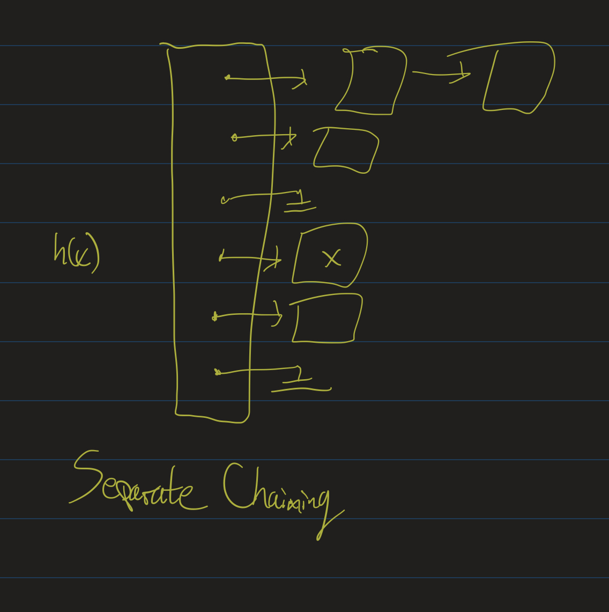
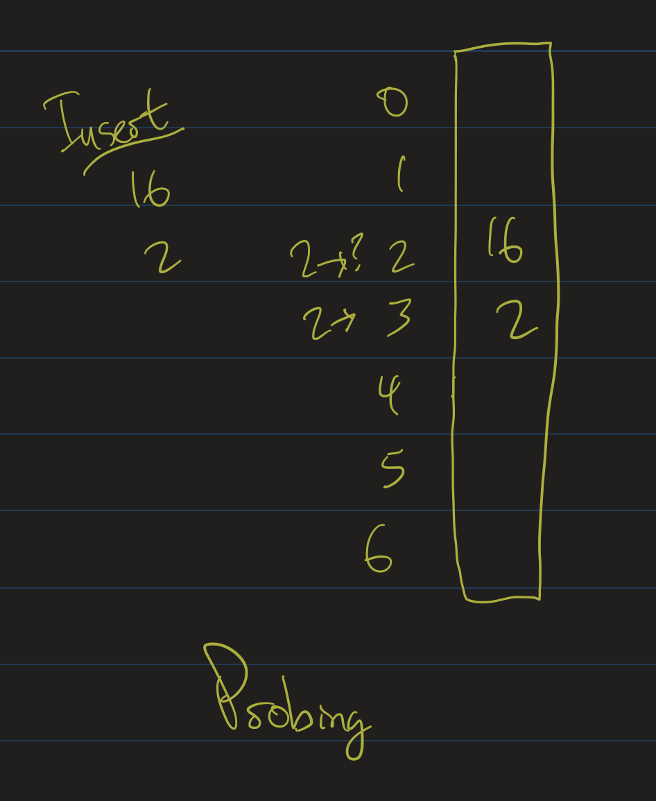
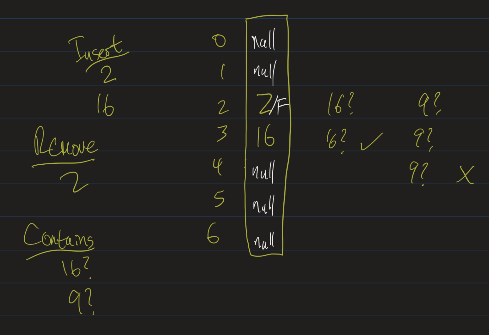

Data Structures
Professor Abdul-Quader
Lesson 10 (Hashtables / Collisions)
Collision Resolution
Two main strategies for collision resolution:
- Separate chaining: Each entry in the hashtable is a List or some other data structure (usually a LinkedList)
- Open addressing: search through the hashtable for another location to put something in.
Think about
As we learn about these, keep this question in mind: in what scenarios (in terms of the table size \(s\) and the number of insertions \(N\)) might we prefer one scheme over the other?
Load Factor
- Let \(N\) be number of elements to insert into the table.
- Let \(s\) be the size of the table.
- \(\lambda = \dfrac{N}{s}\) is called the load factor of the table.
- \(\lambda\) small: few collisions, lots of wasted space
- \(\lambda\) large: space used efficiently, but high chance of collisions.
Separate Chaining
- Don’t keep a “large array”.
- Instead: keep an array of \(s\) lists.
- Think of each list as a “bucket” (or “bin”).
- Elements that hash to the same value go in to the same bucket.
Image

Running times
- Insert \(x\): compute hashcode \(h(x)\), add \(x\) to the \(h(x)\)-th list.
- Running time of insert?
contains: compute the hash function, check the relevant list.- Running time (average case)? Worst case?
- What happens as \(\lambda\) increases?
- Can we keep a bound on \(\lambda\)?
Rehashing
- If we allow \(\lambda\) to increase without bound, performance degrades.
- Many implementations (including Java’s) will rehash if it increases too much.
- Increase the size of the table (usually: pick the next prime number \(p > 2s\)).
- Go through each previously inserted item, and re-insert into the new table.
- Should not happen too often, so that we still get (amortized) constant time inserts.
Image

Video
Open Addressing
- If
table[h(x)]is filled, look for an open spot to put \(x\) in. - Linear Probing: Look at the next spot.
- If that’s filled, check the next one.
Example
- Table size = 7, insert 16 and 2.
- 16 mod 7 = 2, so put 16 at position 2.
- 2 mod 7 = 2, so try to put 2 at position 2.
- Fails, so check position 3.
Image

More generally
- Let \(h(x)\) be our hash function.
- Use another function, \(f(i)\), callled collision resolution function.
- Consider the sequence \(h(x) + f(0), h(x) + f(1), h(x) + f(2), \ldots\)
- Above: \(f(i) = i\).
- \(f(i)\) linear: linear probing.
- \(f(i)\) quadratic: quadratic probing.
- Both cases: want \(\lambda\) to be small, usually less than 0.5
Analysis (Linear)
- If \(s > N\), can always find a spot.
- Might take too long!
- clustering: tendency of keys to cluster around a few spots.
- Too many objects hash close to each other.
- Clustering leads to more clustering
- Average # probes for insert / unsuccessful search: \(\frac{1}{2}(1 + \frac{1}{(1 - \lambda)^2})\).
- Average # probes for successful search: \(\frac{1}{2}(1 + \frac{1}{1 - \lambda})\).
Video
Quadratic
- Uses \(f(i) = i^2\).
- Meaning: check \(h(x)\), then \(h(x) + 1\), then \(h(x) + 4\), etc.
- Problem?
Exercise: Let \(s = 7\). Insert 0, 1, 2, 4, 14 using the strategy \(f(i) = i^2\). What happens?
Problem
- 14 mod 7 = 0. Taken.
- 0 + 1 = 1. Taken
- 0 + 4 = 4, Taken.
- 0 + 9 = 9 mod 7 = 2. Taken.
- 0 + 16 = 16 mod 7 = 2.
- 0 + 25 = 25 mod 7 = 4.
- 0 + 36 = 36 mod 7 = 1.
Modular arithmetic is cyclical: anything over \(f(6)\) will repeat. Never find an open spot!
Upshot
- If \(\lambda > 0.5\) or \(s\) is composite, it’s possible we don’t find an open spot to insert!
- Necessary that \(\lambda \leq 0.5\) and \(s\) is prime.
- Theorem: In that case (\(\lambda \leq 0.5\) and \(s\) is prime), you will always find a spot to insert into the table.
Removals
- \(s = 7\).
- insert(2), insert(16)
- remove(2)
- contains(16)?
- Do you see the problem?
Lazy Deletion
- Lazy deletion: Keep a flag for whether or not a cell is deleted.
- Don’t actually set the entry to null!
- If we search for 16
- Check position 2.
- If it’s null, not there.
- Otherwise, something was there: probe until we see null (or 16).
Image

Video
Java
SetandMapinterfaces.- Set interface: add, contains, remove, size (iterable)
- Implementations: HashSet, TreeSet
Map ADT
- Asks the question: why must arrays use integer indices?
- map: a set of key-value pairs.
void put(K key, V value)V get(K key)boolean containsKey(K key)
Example
HashMap<String, Integer> namesToAgesMap = new HashMap<>();
namesToAgesMap.put("Bob", 27);
namesToAgesMap.put("Athar", 29); // yeah right
namesToAgesMap.put("James", 55);
// some other code
public int getAge(Map<String, Integer> agesMap, String name) {
if (agesMap.containsKey(name)) {
return agesMap.get(name);
}
// if we don't know their age:
return -1;
}Implementations
- Standard library provides good implementations of Map and Set interfaces
- TreeSet, TreeMap, HashSet, HashMap
- Generic! Works with any class.
- BUT: you must implement equals and hashCode
equals / hashCode
- equals(Object o): returns true if o is “equal” to your object
- hashCode(): two objects that are “equal” must return the same hashCode
- Otherwise, HashMap might not work correctly!
- If-then: if they are equal, hashCode should be equal. Other way around? Not necessary.
- hashCode should be random. Distribute objects uniformly across integers.
Exercise
Given a list of data, remove all duplicates from the data. That is, if your list is [1, 2, 1, 4, 3, 1, 3, 4, 1, 2], you should return [1, 2, 4, 3].
Notice that the list returned should have the elements listed in the order that they first appeared in the original list.
Algorithms
- Simple \(O(n^2)\) solution using nested for loops.
- Pseudocode?
- Improve it using a data structure?
- Pseudocode and running time of improved solution?
Challenge Problems
- Given a tree (not necessarily a BST, not necessarily even a binary tree), and a node N, output the path (list of vertices visited) from the root to N.
- Given a binary tree (not a BST), a node N and a height \(h\), find the ancestor of N that is \(h\) levels above N.
- Given a binary tree (not a BST) and two nodes on the tree, determine their lowest common ancestor.
All slightly different versions of hte same problem.
Hint
Level-order traversal:
enqueue(root)
while (queue is not empty) {
dequeue a node
print node.data
enqueue node.left, node.right
}Modify this algorithm to keep track of the path from the root to the node?
Hint 2
- Each node should keep track of who enqueued it.
- Modify the while loop to exit as soon as you dequeue the node you’re looking for.
- Then backtrack.
- Code here is tricky: try to implement this!
Upcoming
- Quiz 1 on Thursday; can make up anything incorrect / missed for homework.
- HW 2 due Thursday.
- Project 2